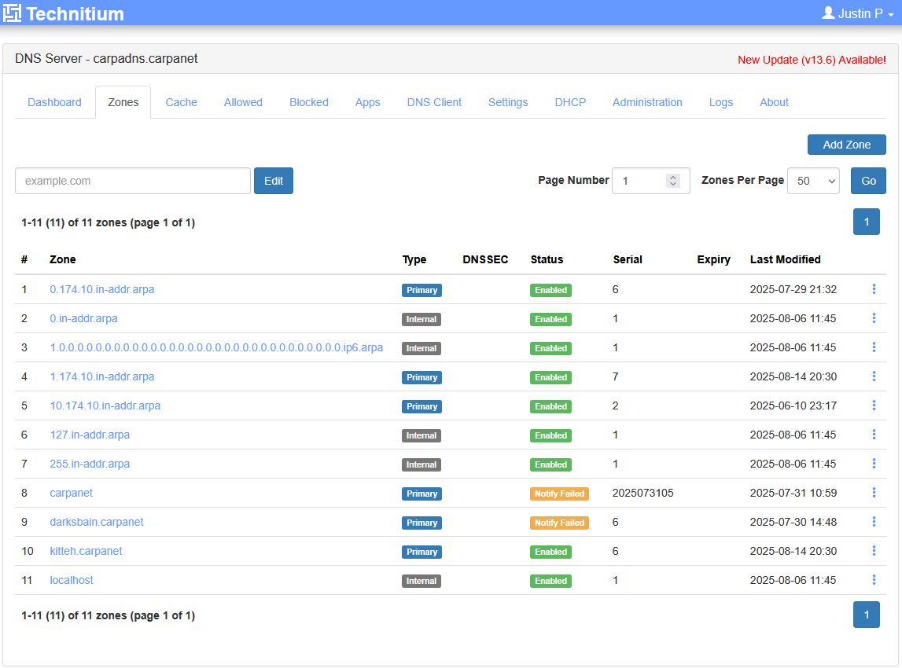
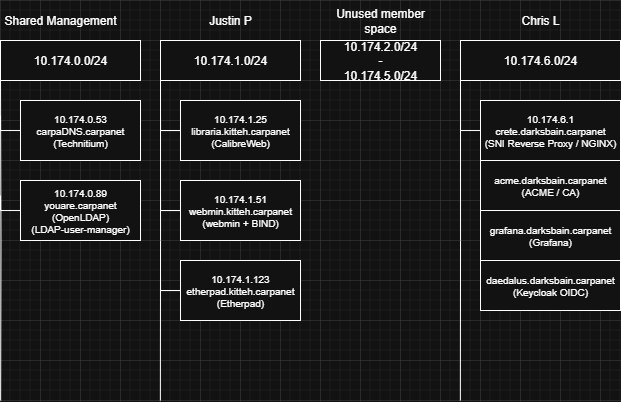
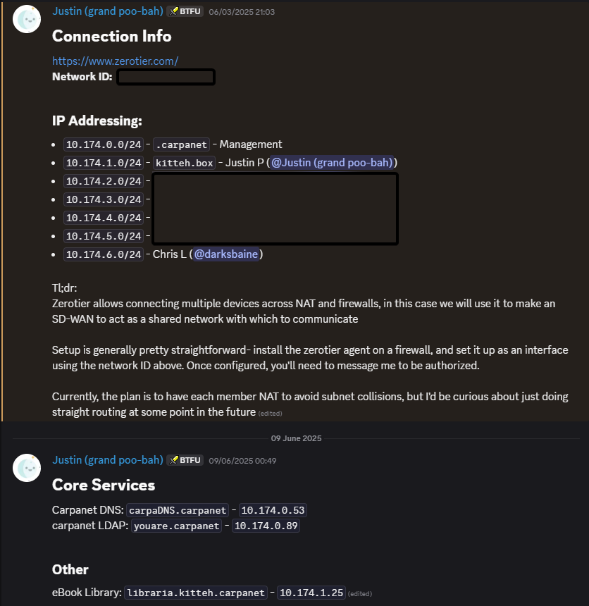

1. Introduction
About 3 months ago, I decided that what my homelab was missing was a sense of community. I already used ZeroTier to connect back to my network, and was familiar with the idea of darknets from looking into dn42 a long time ago, and thought it would be awesome to try building my own!
For the purposes of SIGHORSE, we needed to define a scope, and for carpanet, v1.0 was defined as the following:
-
Connectivity between members
-
DNS (shared management)
-
Some media-based service
-
Centralized authentication
1.1. Vision/manifesto
A community of homelabs, where people can expose services and collaborate on something a little different from what they'd normally work on
An enterprise-like network, with all core services hobbyisted out with open-source software
A land to share your creations and art, your movie collections or your websites, a testing ground for interesting technology
1.2. Timeline
borne as cloudly üó£Ô∏è, soon to be renamed carpanet üêü since cloudly already exists as an AI app‚Äì carpanet harkens back to the days of ARPANET, but fish.
…
2025-03-01 - carpanet ZeroTier network created
2025-03-04 - carpanet discord created
…
2025-05-18 - The first connection is established (we have a second member on the network)
…
2025-06-05 - projectcarpa.net registered
2025-06-07 - the first carpanet fishing expedition (group call)
2025-06-09 - libraria goes live
2025-06-18 - carpanet joined SIGHORSE
2025-06-22 - Blog - https://ow.bearblog.dev/carpanet-ldap-broken-because-dns/
2025-06-23 - Blog - https://ow.bearblog.dev/carpanet-the-reference-architecture-for-routing-and-dns/
…
2025-07-16 - carpanet Energizer UPS adventure
2025-07-21 - libraria connects to LDAP
2025-07-23 - ACME server is brought up
…
2025-08-01 - Chris forks Technitium for OIDC
2025-08-14 - Etherpad joins the party!
2. Architecture
2.1. Network
2.1.1. ZeroTier
The overlay network that kicked off the whole thing- NAT traversal and UDP hole punching mean that I don't need to expose anything to the internet to connect, and the support for layer 2 bridging means I can share IP space with my existing homelab (and even do things like Wake on LAN directly from my mobile device).
I prefer it to Tailscale, feels more baremetal and less flashy, and seems to give a little more control
For carpanet, the original vision was to simply connect all members on a shared layer 2, and use BGP/OSPF to route between member sites, but complexity quickly became a concern, as did the fact that not all members had the ability to easily add a new router to their network (limited hardware, limited knowledge, limited willingness)
For this reason, carpanet became a single /16 supernet, containing each of the members' /24s.
The actual ZeroTier configuration for this was quite simple; it only needed a Managed Route of 10.174.0.0/16 to allow joined devices proper routing, and manual addition of a Managed IP for most devices, as assigning it on the devices adds complexity (but can work, as I set up with OPNsense).
2.1.2. OPNsense
pfSsense seemed sketchy, trying to download the package required a checkout screen
Setup was fairly straightforward, although learning the terminology and menu structure took a little while
The features we use the most are virtual IPs, allowing putting multiple machines into the carpanet network without adding them into the ZeroTier network individually
IP alias seemed to work the best, but issues were encountered with ARP for the Etherpad addition for some reason, requiring the addition of a Proxy ARP Virtual IP for my /24 range.

OPNsense was configured to manage the IP of the ZeroTier interface itself, from when the aim was to have carpanet be a simple Layer 2 connection, leaving Layer 3 IP configuration to clients. We weren't quite ready for that, however, so we went with centrally-managed IPs.
2.1.3. Pi as Router
Chris instead opted to use a Pi as a router, due to lack of hardware to virtualize a full router.
For this to join carpanet and proxy traffic both into and out of carpanet, it had to be configured to NAT and act as a reverse proxy. Chris used iptables to forward interface traffic.
Traffic destined for the carpanet IP range was static routed from my other devices to the Pi. The Pi then forwarded that traffic from the physical interface to the ZeroTier interface.
2.2. DNS
For carpanet v1, DNS was a requirement, but I didn't want to manage raw BIND, nor did I expect others to learn it, so we needed a DNS server with some kind of frontend.
There are a number of options out there, and we evaluated primarily Pihole, Technitium, BIND with Webmin, and PowerDNS with PowerDNS Admin.
2.2.1. PiHole
Very common, and I have familiarity from using it in my home network already
In its favor is the cleanliness of the web GUI, the ease of management and intuitive design
However, Pihole is designed primarily as a DNS forwarder/blackhole, and as such it only supports lists of local DNS entries fed into the forwarder engine, rather than a full DNS server database. This would have caused issues down the line when it came to expanding, as there would be no support for DNS zone hierarchy or granular permissions.
2.2.2. PowerDNS with PowerDNS Admin
PowerDNS Admin could have worked, but hasn't been actively maintained and was too buggy
2.2.3. BIND with Webmin
Webmin was too generalized for our purposes, and lacked finer control over DNS through the web UI. Of all the options, this landed in second place.
The UI isn't bad, but Webmin being so broad worked against this option, as we only needed a full-time DNS server without additional plugins.
This has been built to act as a secondary node, replicating some of the DNS zones from Technitium.
2.2.4. Technitium
Recommended by some of our friends, this is a dedicated DNS server written in .NET, and has a very well made GUI
After deploying it for evaluation, it was clear this ticked all the boxes for us, and was the server we went with. The Role-Based Access it implements allows us to all have logins to the Technitium server, and manage our own zones as well as share management of the central .carpanet zone, keeping things simple but also restricted.
One drawback we came across while setting this up was lack of support for centralized authentication (LDAP/OIDC), however Chris was able to use his existing experience with C# and .NET to fork its repository and implement support for OIDC SSO, which will allow us to manage permissions and logins from a trusted third server (see challenges section).
2.3. Identity
Speaking of centralized authentication, we needed an IdP to act as the cornerstone of the network and hold the user database. For us to all share a network, there needed to be some form of shared trust, and the simplest seeming first step was an LDAP database to have one store of logins.
We ended up layering OpenLDAP with Keycloak, building the initial database in OpenLDAP, and shifting to management and synchronization with Keycloak, which provides OIDC SSO.
2.3.1. LDAP
We started by setting up OpenLDAP, which was not as plug-and-play as I had expected. As part of this, I had to read up on how the LDAP database is managed and structured, and left with a deeper understanding of the structure.
Setting up the schema was still tough, so I got some help– building the schema and data out using lfif files manually was disconcerting, since I wasn't sure which attributes would be necessary. To hasten setup, instead I looked for other tools that plug into an LDAP database and build a frontend for configuration, settling on ldap-user-manager (GitHub). This was able to take over the schema for me, and handled group creation like a charm!
2.3.2. OIDC
KeyCloak was picked for this. It is backed by LDAP. Keycloak utilizes "realms" to separate permissions. The Admin role in the master realm has permissions over all other realms. You can get fairly granular with permissions. You can allow users to setup different 2fa methods such as a passkey or OTP code. Certain passkeys (such as Android native) don't work however when there is no external access.
2.4. Certificates
Step-ca is the Certificate Authority. It is setup as an ACME CA for automated certificates. The CA started as pebble for a proof of concept, after which Boulder was tried. Boulder did more than needed and wouldn't start to due to some conflicting services on the same server (the laptop in a drawer). Boulder was sunset and step-ca was born as the Carpanet CA.
3. Services
3.1. Calibre-Web (libraria)
I chose this because I felt we needed something to justify the network's existence, but a streaming server like Jellyfin would be pretty resource-intensive
I don't have a ton of hardware, compute, or storage, so an ebook library came across as the perfect choice, requiring minimal processing, traffic, and storage relative to video
3.2. Etherpad - what this was written in!
Running a node project as a service gave me some trouble, but I worked around it using the Unix screen command to run it in a virtul tty, which worked well enough for this!
Having this available as a collaborative notepad to write in was invigorating, and feels like the first glimpse into what this could become. Adding services as needed to replace reliance on current public, corporate services.
3.3. Grafana
Who doesn't love some good monitoring? Webhooks can be used to send alerts to Discord. This was originally built with SQLite (ended up with corrupted config and no easy way to fix the database). It was rebuilt on a postgres database. It also supports Keycloak authentication.
4. The Cool Challenges (Lessons Learned)
4.1. Building OIDC for Technitium (carpaDNS)
- The issue: https://github.com/darksbain6749/DnsServer/tree/cmlpoc
- The fix (in progress, but a working proof of concept!): https://github.com/TechnitiumSoftware/DnsServer/issues/512
This was an interesting project. It took several iterations. The first being an entirely hijacked login page with hard-coded values (no option for non-OIDC login). The second major iteration was the option to do login with native Technitium or OIDC (still hard-coded values). The third iteration allows input in the Administration settings in the GUI and saves the config to disk in an encrypted config file. There where also some nuances between the Windows dev environment and Linux/Unix that needed addressed when all was done and working.
4.2. Onboarding
One challenge I had to deal with during the formation of carpanet has to do with the goal for this to be a community project– folks are joining from various different skill levels and amounts of time to commit.
I have the privilege of working with a good variety of nerds, but they don't have the same passions I do, so I needed to find a way to lower the barrier to entry and allow easier setup.
To this end, we ended up using Discord as our onboarding platform, using a pinned post to include information about startup and document what's active on the network for people to use! This made it easier to find information, and led to two "fishing expeditions" where we gathered members in a call or at a communal location, and talked through the vision and specific technical challenges.
Even with the discord however, it became a challenge to keep information up to date and central, and remains an open challenge.
Acknowledgements
Thank you to all these lovely people for your help and interest along the way, in no particular order…
- Naido (first member to join carpanet)
- Chris Luby (darksbain, for locking in and getting hyped about OIDC)
- h9uu (for coming to the first carpanet fishing expedition üé£)
- Purdue Hackers (for running SIGHORSE and being a bunch of passionate people)
- noodlesinspace (for suggesting OIDC in the first place)
- and all the open source, free, and public software and the people that maintain them– none of this would be possible without your passion and commitment